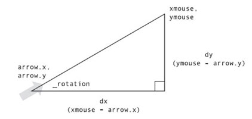

现在看看javascript另外一个常用的数学函数Math.atan(y,x),这个函数可以直接通过已知的对边和邻边，求得弧度，还是先来看代码，通过代码解释比较清楚
var dx = mouse.x-arrow.x,; dy = mouse.y-arrow.y rotion =Math.atan2(dy,dx); arrow.rotation = rotion;
计算旋转弧度,object.rotation =Math.atan2(dy,dx);

demo
结合项目实际